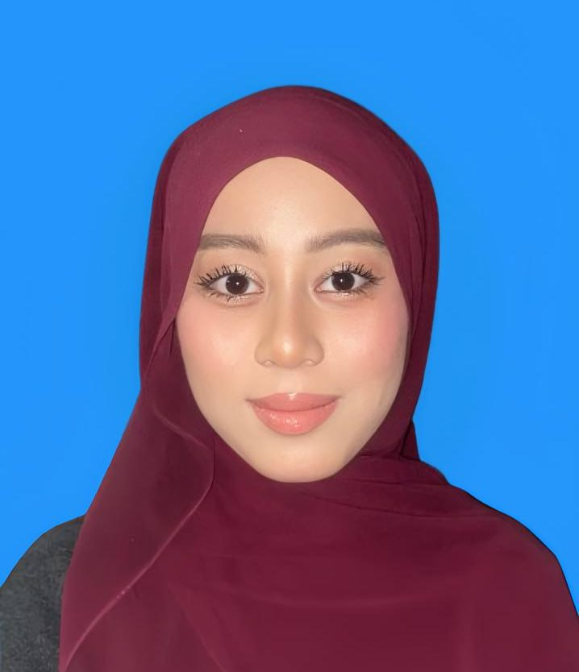

About Me
My name is Nurdarwisyah binti Muhamad Zaharrudin. I am currently pursuing a Bachelor of Computer Science (Software Development) with Honours at Universiti Sultan Zainal Abidin (UniSZA).
I have a strong interest in web development, database systems, software engineering, and emerging technologies. I enjoy building practical applications that solve real-world problems.
Education
SMK Agama Bandar Penawar, Kota Tinggi, Johor (2017-2022)
Secondary School
Kolej Matrikulasi Johor (2022-2023)
1-Year Pre-University Programme
Computer Science
Universiti Sultan Zainal Abidin (UniSZA) (2023-Present)
Bachelor of Computer Science (Software Development) with Honours
Technical Skills
HTML
CSS
JavaScript
PHP
MySQL
Java
Flutter
Linux
Achievements
🏆 Dean's List for Five Consecutive Semesters
🏆 Champion - KMJava Programming Competition